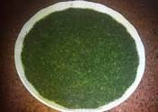
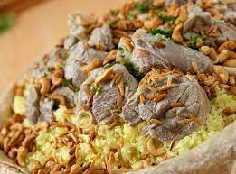
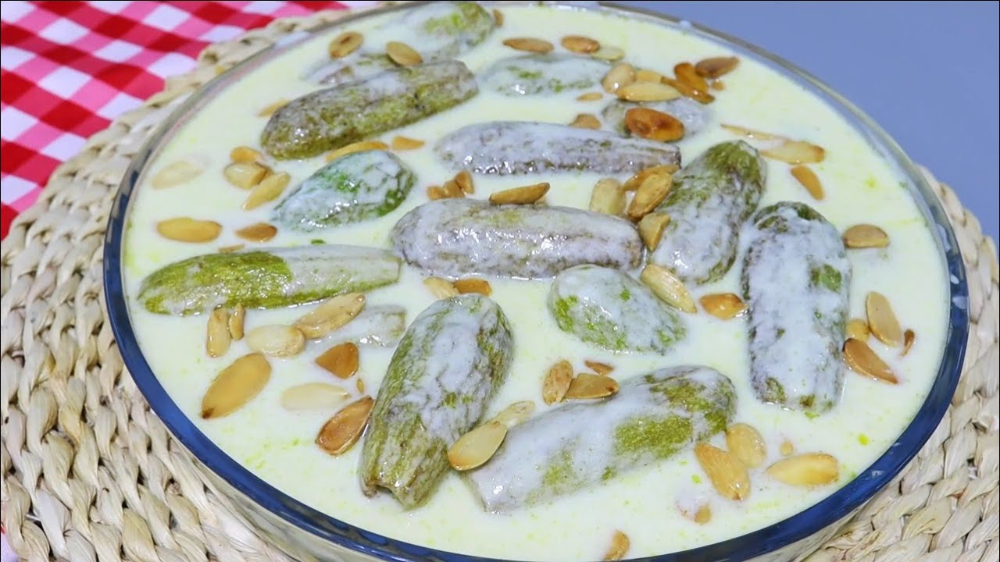

and here is the most 3 meals i love

The ingredients of the famous dish mallow include the main ingredients are the mallow plant itself which is also known as Nile arugula or sea arugula. Here is a list of basic ingredients for cooking mallow: Molokhia: is the main ingredient in this dish. Fresh or dried mallow leaves are used to prepare the dish. Mallow can be cut into thin slices or used whole. Meat: Various types of meat can be used with mallow, such as chicken, beef or lamb. The meat is cut into small pieces and can be cooked with mallow. Onions: Onions are cut into small pieces and used as a flavoring supplement. Vegetable oil: used to fry onions and meat if desired. Spices and seasonings: Traditionally, the spices and herbs used in making mlokheya can include coriander, cumin, garlic, and sometimes a dash of chili pepper. Water or broth: Water or broth is added to the dish and served whether the mallow is dry or in the form of soup. Lemon juice: Lemon juice can be added to give a refreshing and acidic flavor to the dish. The ingredients for mallow may vary slightly depending on local customs and traditions and the preferences of chefs. The way mallow is also prepared may vary from region to region.

is a popular traditional meal in some Arab countries and the Middle East, and is considered one of the most famous dishes in the region. Mansaf is characterized by its main ingredients, which include rice, meat and toasted bread, and is often prepared for special occasions and holidays.

Makhshi with yogurt is one of the delicious and favorite dishes in many Arab regions and the Middle East. This dish is distinguished by the presence of the main ingredient that gives it its name, which is milk or yogurt. Makhshi bilban is carefully prepared, mixing fresh yogurt with other ingredients such as spinach, zucchini, or okra, and spices.